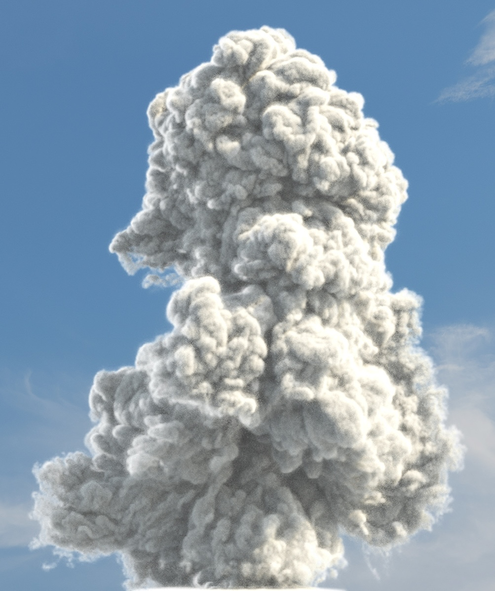

Fluid Implicit Particles on Coadjoint Orbits
SIGGRAPH Asia 2024
Best Paper (Honorable Mention)
We propose Coadjoint Orbit FLIP (CO-FLIP), a high order accurate, structure preserving fluid simulation method in the hybrid Eulerian-Lagrangian framework. Using a discrete Hamiltonian formulation we achieve energy and Casimir preservation; formally, the flow evolves on infinite-dimensional coadjoint orbits.